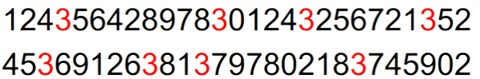

<!DOCTYPE html>


<html lang="en">


<head>
  <meta charset="utf-8" />
   
  <meta name="keywords" content="c,c++,java,python,leetcode,algorithm,reading,life,moods,machine-learning,data-mining,deep-learning,AI" />
   
  <meta name="description" content="一个分享机器学习、算法与数据结构，个人学习心得、读书笔记、生活的博客。" />
  
  <meta name="viewport" content="width=device-width, initial-scale=1, maximum-scale=1" />
  <title>
    Twitter数据挖掘及其可视化 |  一个分享机器学习、算法与数据结构，个人学习心得、读书笔记、生活的博客。
  </title>
  <meta name="generator" content="hexo-theme-ayer">
  
  <link rel="shortcut icon" href="/favicon.ico" />
  
  
<link rel="stylesheet" href="/dist/main.css">

  
<link rel="stylesheet" href="https://cdn.jsdelivr.net/gh/Shen-Yu/cdn/css/remixicon.min.css">

  
<link rel="stylesheet" href="/css/custom.css">

  
  
<script src="https://cdn.jsdelivr.net/npm/pace-js@1.0.2/pace.min.js"></script>

  
  

  

</head>

</html>

<body>
  <div id="app">
    
      
    <main class="content on">
      <section class="outer">
  <article
  id="post-twitter-data-mining-and-visualization"
  class="article article-type-post"
  itemscope
  itemprop="blogPost"
  data-scroll-reveal
>
  <div class="article-inner">
    
    <header class="article-header">
       
<h1 class="article-title sea-center" style="border-left:0" itemprop="name">
  Twitter数据挖掘及其可视化
</h1>
 

    </header>
     
    <div class="article-meta">
      <a href="/twitter-data-mining-and-visualization/" class="article-date">
  <time datetime="2017-02-09T11:53:43.000Z" itemprop="datePublished">2017-02-09</time>
</a> 
      
  <div class="article-category">
    <a class="article-category-link" href="/categories/study/">study</a> / <a class="article-category-link" href="/categories/study/%E8%AF%BE%E7%A8%8B%E8%AE%BE%E8%AE%A1/">课程设计</a>
  </div>
 
       
        
<div class="word_count">
    <span class="post-time">
        <span class="post-meta-item-icon">
            <i class="ri-quill-pen-line"></i>
            <span class="post-meta-item-text"> Word count:</span>
            <span class="post-count">7.9k</span>
        </span>
    </span>

    <span class="post-time">
        &nbsp; | &nbsp;
        <span class="post-meta-item-icon">
            <i class="ri-book-open-line"></i>
            <span class="post-meta-item-text"> Reading time≈</span>
            <span class="post-count">28 min</span>
        </span>
    </span>
</div>

      
       
        <div class="word_count">
    <span class="post-meta-item-icon">
        <i class="ri-eye-fill"></i> 
        阅读数:<span id="/twitter-data-mining-and-visualization/" data-flag-title="Twitter数据挖掘及其可视化" class="leancloud_visitors">0</span>次
    </span>
</div>
      
    </div>
      
    <div class="tocbot"></div>


  
    <div class="article-entry" itemprop="articleBody">
       
  <p>前阵子有学弟学妹问我毕设做的啥，于是我决定记录一下去年毕设的内容。</p>
<p>主要是基于twitter的内容有：</p>
<ul>
<li>实时热点话题检测</li>
<li>情感分析</li>
<li>结果可视化</li>
<li>Twitter数据挖掘平台的设计与实现<a id="more"></a>
</li>
</ul>
<h2 id="毕设、论文内容"><a href="#毕设、论文内容" class="headerlink" title="毕设、论文内容"></a>毕设、论文内容</h2><p>毕设从16年3月开始做，做到5月初，开始写论文，当时写的论文一共有七章,写了一个礼拜，从早到晚- - 共24834字。数据有的从15年11月左右开始抓的。导师那时候很忙都没空理我- - 都自己说要做啥然后自己去做。。。。</p>
<p>论文总共有七章，结构安排如下：</p>
<p>第一章，引言。主要介绍了Twitter下进行的数据挖掘的背景，以及国内外研究现状，并简要的说明了本文的主要研究内容。</p>
<p>第二章，Twitter相关的内容介绍。主要介绍Twitter的一些特殊语法，如用户提及@，hashtags等，接着讨论了Twitter中大量存在的拼写错误、缩写、重复字母现象，最后介绍了Twitter的REST API与StreamAPI。</p>
<p>第三章，实时热点话题挖掘。该章节首先介绍了LDA相关的模型，接着提出了WOLDA算法，以及最具有代表性推文的计算方法。</p>
<p>第四章，情感分析。该章节介绍了Twitter下的情感分析分类、以及机器学习的一般过程，接着介绍本文使用机器学习和情感词典相结合的方法。</p>
<p>第五章，数据可视化。介绍了几种基于统计的可视化方法，还有主题分析和情感分析的可视化的方法，可以更直观的表示结果。</p>
<p>第六章，Twitter数据挖掘平台的设计与实现。结合了前面几章的内容，介绍实现该系统的细节。</p>
<p>第七章总结了本文的工作，针对目前的不足，提出下一步改进的方案。</p>
<p>本篇博文为缩减版，除了略去一二章外，其它章节也做了精简。</p>
<h2 id="实时热点话题挖掘"><a href="#实时热点话题挖掘" class="headerlink" title="实时热点话题挖掘"></a>实时热点话题挖掘</h2><p>Twitter从2006年以来，发展迅猛。举两个数据来讲，</p>
<ul>
<li>2015年5月，Twitter拥有超过5亿的用户，其中有超过3.32亿的活跃用户</li>
<li>2016年2月28日莱昂纳多获得第88届奥斯卡最佳男主角奖时，据统计，这一消息在Twitter上的讨论达到每分钟44万次</li>
</ul>
<p>可以看出，Twitter的数据量是十分庞大的。为了能够了解Twitter上人们在谈论些什么，我们希望能够有一种有效的方 式来获取 Twitter 实时的热点话题。要求该方式：</p>
<ol>
<li>能处理流数据并且对模型进行周期性的更新 。</li>
<li>产生的主题 与过去的 主题有关联 以便 观测话题的演变 。</li>
<li>资源占用稳定，不随时间增大而以便保证效率和对新话题的敏感 。</li>
</ol>
<h3 id="LDA模型"><a href="#LDA模型" class="headerlink" title="LDA模型"></a>LDA模型</h3><p>首先想到的就是主题模型。</p>
<p>2003年，D.Blei等人提出了广受欢迎的LDA（Latentdirichlet allocation）主题模型[8]。LDA除了进行主题的分析外，还可以运用于文本分类、推荐系统等方面。</p>
<p>LDA模型可以描述为一个“上帝掷骰子”的过程，首先，从主题库中随机抽取一个主题，该主题编号为K，接着从骰子库中拿出编号为K的骰子X，进行投掷，每投掷一次，就得到了一个词。不断的投掷它，直到到达预计的文本长度为止。简单的说，这一过程就是“随机的选择某个主题，然后从该主题中随机的选择词语”。按照之前的描述，一篇文档中词语生成的概率为：</p>
<script type="math/tex; mode=display">
p(词语文档) = \sum_{主题} (p(词语主题)·p(主题文档))</script><p>可以用矩阵的乘法来表示上述的过程：</p>
<p></p>
<p>回到LDA模型来说，LDA模型的输入是一篇一篇用BOW(bag of words)表示的文档,即用该文档中无序的单词序列来表示该文档（忽略文档中的语法和词语的先后关系）。LDA的输出是每篇文档的主题分布矩阵和每个主题下的单词分布矩阵。简而言之，LDA主题模型的任务就是已知左边的矩阵，通过一些方法，得到右边两个小矩阵。这里的“一些方法”即为LDA采样的方法，目前最主要的有两种，一种是变分贝叶斯推断(variationalBayes, VB),另一种叫做吉布斯采样(Gibbs Sampling)，其中吉布斯采样也被称为蒙特卡洛马尔可夫 (Markov Chain Monte Carlo，MCMC)采样方法。</p>
<p>总的来说，MCMC实现起来更加简单方便，而VB的速度比MCMC来得快，研究表明他们具有差不多相同的效果。所以，对于大量的数据，采用VB是更为明智的选择。</p>
<h3 id="Hoffman-OLDA"><a href="#Hoffman-OLDA" class="headerlink" title="Hoffman OLDA"></a>Hoffman OLDA</h3><p>虽然VB的速度相对而言比较快，但是对于巨大的数据来说，VB计算量仍十分巨大的，对此，Hoffman提出了Online variational Bayes (VB)算法(下面简称为OLDA)，将数据集其分为一些小的batch, 然后更新，运算速度得到了巨大的提升。</p>
<p></p>
<h3 id="WOLDA"><a href="#WOLDA" class="headerlink" title="WOLDA"></a>WOLDA</h3><p>虽然Hoffman提出的OLDA算法可以对后加进来的文档不断的更新，但是，该算法仍不能称得上是在线的算法。原因如下：</p>
<ol>
<li>该算法采用静态词库(忽略不在词库中的词)，而对于Twitter来说，新词不断涌现，缩写词、网络流行语、特殊事件人名、地名频繁出现，基本无法预测。即使我们拥有一个囊括了所有词的词库，那么这个词库也必然是巨大的，造成矩阵过于稀疏，运算效率低下。</li>
<li>OLDA算法对旧话题“淡忘”速度越来越慢。如果一开始出现了所谓的“离题”(topic drift)现象，结果将会十分差劲，这不利于新话题的检测。</li>
</ol>
<p>为此，改进的算法命名为WOLDA。</p>
<p>WOLDA采用动态的词库，（滑动时间窗口）</p>
<ul>
<li>时间分为一个个时间片</li>
<li>只保留时间窗口L内的词 &amp;&amp; 词频 &gt; min_df（预设值）</li>
</ul>
<p></p>
<p>对于1~L个时间片，对词频不小于min_df的词作为当前WOLDA的词库。</p>
<p>第L+1个时间片到来时，删除第1个时间片的文档，对第2个到第L+1个时间窗口内的文档重新计算词频，并将词频不小于min_df的词作为当前WOLDA的词库。</p>
<p>模型的更新方法为，对于新词，进行随机的初始化，而对于原本存在词库中的词有：</p>
<script type="math/tex; mode=display">
\lambda = C * \lambda</script><p>贡献因子C使得模型具有事件演变的能力，它将连续时间切片上的前后模型相结合。在具体的实现上，对于给定贡献因子C，我们只需要反解出OLDA中的更新次数t，将OLDA的更新次数重新设置为t即可，公式如下：</p>
<script type="math/tex; mode=display">
t = (1-C)^{-\frac{1}{\kappa}}-\tau_0</script><p>此外，还需要更新OLDA相应参数，如单词总数W和文档长度D。</p>
<p>算法描述如下：</p>
<figure class="highlight plain"><table><tr><td class="gutter"><pre><span class="line">1</span><br><span class="line">2</span><br><span class="line">3</span><br><span class="line">4</span><br><span class="line">5</span><br><span class="line">6</span><br><span class="line">7</span><br><span class="line">8</span><br><span class="line">9</span><br><span class="line">10</span><br></pre></td><td class="code"><pre><span class="line">定义窗口大小 L，贡献因子c,最小的词频 min_df</span><br><span class="line">for n &#x3D; 0 to ∞ do</span><br><span class="line">  对时间片n的文档集合进行预处理，如去除停止词等操作。</span><br><span class="line">  if n&#x3D;&#x3D;1:</span><br><span class="line">     该文档集过滤词频小于min_df的，正常运行OLDA</span><br><span class="line">  else if 2 &lt;&#x3D; n &lt;&#x3D; L:</span><br><span class="line">     把第2~n的文档所有词重新计算词频，词频不小于min_df的词作为当前OLDA词库，新的词随机初始化。计算t，更新W和D，运行OLDA算法。</span><br><span class="line">  else if n &gt; L:</span><br><span class="line">     删除第n-L篇文档，将第n–L+1 ~ n的文档的所有词重新计算词频，词频不小min_df的词作为当前OLDA词库，新的词随机初始化。计算t，更新W和D，运行OLDA算法。</span><br><span class="line">end for</span><br></pre></td></tr></table></figure>
<h3 id="最具有代表性的推文计算"><a href="#最具有代表性的推文计算" class="headerlink" title="最具有代表性的推文计算"></a>最具有代表性的推文计算</h3><p>运行WOLDA算法后，我们得到了每个主题下对应的主题词，主题词有时候对于主题的描述不够直观，为此我们希望从该主题下，能找到最具有代表性的推文，用来帮助解释和说明该主题的内容。本小节提出几种最具有代表性的推文的计算方法，并在之后的实验中加以对比。</p>
<h4 id="KL-mean"><a href="#KL-mean" class="headerlink" title="KL-mean"></a>KL-mean</h4><p>KL散度(Kullback–Leibler divergence)又称为相对熵（relative entropy），它可以用来衡量两个概率分布的相似程度。对于离散型的随机变量，其概率分布P和Q的KL散度定义如下：</p>
<script type="math/tex; mode=display">
D_{KL}(PQ) = \sum_iP(i) ln\frac{P(i)}{Q(i)}</script><p>通常情况下KL散度是非对称的，因此这里采用KL-mean方式（求P和Q KL散度以及Q和P KL散度的均值）</p>
<script type="math/tex; mode=display">
D_{KL-mean}(PQ) = \frac{1}{2}(D_{KL}(PQ) +D_{KL}(QP) )</script><p>使用KL-mean距离计算最具有代表性的推文伪代码如下：</p>
<figure class="highlight plain"><table><tr><td class="gutter"><pre><span class="line">1</span><br><span class="line">2</span><br><span class="line">3</span><br><span class="line">4</span><br><span class="line">5</span><br><span class="line">6</span><br><span class="line">7</span><br><span class="line">8</span><br><span class="line">9</span><br><span class="line">10</span><br><span class="line">11</span><br><span class="line">12</span><br><span class="line">13</span><br><span class="line">14</span><br></pre></td><td class="code"><pre><span class="line">pro_matrix: 主题-单词矩阵</span><br><span class="line">features &#x3D; []</span><br><span class="line">for tweet_id,tweet in tweets do</span><br><span class="line">   topic_id根据文档-主题矩阵得到当前推文最大可能从属的主题序号</span><br><span class="line">   feature &#x3D; [0 …] &#x2F;&#x2F; 长度为词库的大小的全0数组</span><br><span class="line">   for word_id, each word in tweet do: &#x2F;&#x2F;word_id 为当前单词在词库中的下标</span><br><span class="line">            feature[word_id] &#x3D; word_cnt * pro_matrix[topic_id][word_id] </span><br><span class="line">            &#x2F;&#x2F;当前单词出现的次数乘以相应的主题-单词矩阵中的概率</span><br><span class="line">        end for</span><br><span class="line">   features.append(feature)</span><br><span class="line">end for</span><br><span class="line">对于所有相同主题序号的推文，计算其feature的平均值作为主题的中心。</span><br><span class="line">接着使用KL-mean距离计算每条推文与其主题中心的距离dis</span><br><span class="line">对于每个主题，找到与类中心最小距离的推文，该推文即为最具有代表性的推文。</span><br></pre></td></tr></table></figure>
<h4 id="余弦距离"><a href="#余弦距离" class="headerlink" title="余弦距离"></a>余弦距离</h4><p>余弦距离常常用来衡量相似度(通过计算两个向量夹角的余弦值)。其定义如下：</p>
<script type="math/tex; mode=display">
D_{cos}(P,Q) = \frac{P·Q}{P·Q}</script><p>使用余弦距离计算最具有代表性的推文的方法与KL散度的方法过程类似，只不过最后采用了余弦距离来计算每条推文与其主题中心的距离。</p>
<h4 id="最大熵"><a href="#最大熵" class="headerlink" title="最大熵"></a>最大熵</h4><p>在信息学中，熵（Entropy）常常被用来衡量信息不确定度的大小，信息的不确定度，表明其信息量也越大，同时熵也越大。熵的计算公式如下：</p>
<script type="math/tex; mode=display">
Entropy(X) = -\sum_iP(x_i)log_2P(x_i)</script><figure class="highlight plain"><table><tr><td class="gutter"><pre><span class="line">1</span><br><span class="line">2</span><br><span class="line">3</span><br><span class="line">4</span><br><span class="line">5</span><br><span class="line">6</span><br><span class="line">7</span><br><span class="line">8</span><br><span class="line">9</span><br><span class="line">10</span><br><span class="line">11</span><br></pre></td><td class="code"><pre><span class="line">p: 主题-单词矩阵</span><br><span class="line">entropy &#x3D; []</span><br><span class="line">for tweet_id,tweet in tweets do</span><br><span class="line">   topic_id根据文档-主题矩阵得到当前推文最大可能从属的主题序号</span><br><span class="line">   cur_entropy &#x3D; 0</span><br><span class="line">   for word_id, each word in tweet do: &#x2F;&#x2F;word_id 为当前单词在词库中的下标</span><br><span class="line">           cur_entropy +&#x3D; -p[topic_id][word_id] * log2 (p[topic_id][word_id])</span><br><span class="line">        end for</span><br><span class="line">   entropy.append(feature)</span><br><span class="line">end for</span><br><span class="line">对于每个主题，找到熵最大的推文，该推文即为最具有代表性的推文</span><br></pre></td></tr></table></figure>
<h2 id="情感分析"><a href="#情感分析" class="headerlink" title="情感分析"></a>情感分析</h2><p>为什么要进行情感分析？Twitter的作为一个微博客服务，它的推文中又充斥着大量的观点见解，进行情感分析也同样具有广阔的应用场景,比如说以下的这个方面：</p>
<ol>
<li>情感分析可以帮助用户做出是否购买的决策。例如，消费者在犹豫是否购买产品时，会很自然的去查看其他人对于该商品的评价。如果“好评”居多，该消费者可能就会进行购买；反之，如果“差评”占大多数，那么该消费者一般而言就不会进行购买了。如果能针对Twitter这种既有强时效性又有广泛话题领域的社交媒体进行情感分析，那将给用户带来更多的便利。</li>
<li>情感分析还可以帮助企业进行市场调研。企业在推出一款新的产品之后，可以通过情感分析来从大量的用户评价中得到有用的信息，如用户喜欢什么，不喜欢哪一方面，对公司的产品和服务有哪些正面或负面的影响。从而企业可以了解自身的优势和不足，可以更好的制定相应的措施进行服务的改进，从而在激烈的市场竞争中占据主动地位。</li>
<li>舆情监控。由于用户可以在社交媒体上相对自由的发表自己的观点，这使得社交媒体成为了舆情话题产生和传播的重要方式。通过对社交媒体的情感分析，可以为政府了解民意、引导舆论提供有效的工具。对于负面的消息，可以较为及时的安抚好民众的情绪，避免事态进一步恶化。同时，政府也可以制定相应的策略来改善现有的服务。</li>
<li>事件预测。随着互联网发展，越来越多的民众愿意到网上发表自己对某一事件的看法，无论是在诸如Twitter、新浪微博这样的微博客，还是在贴吧、知乎等站点上。一个典型的例子就是最近阿里人工智能运用神经网络、情绪感知等技术对《我是歌手》第四季总决赛的歌王进行了成功的预测。此外，Twitter这一个平台也常常被拿来预测选举、股票等。</li>
</ol>
<h3 id="情感分析方法"><a href="#情感分析方法" class="headerlink" title="情感分析方法"></a>情感分析方法</h3><p>本文采用的情感分析可以说是一个标准的机器学习的分类问题。</p>
<p>目标是给定一条推文，将其分为正向情感、负向情感、中性情感。</p>
<h4 id="预处理"><a href="#预处理" class="headerlink" title="预处理"></a>预处理</h4><ul>
<li><p>POS标注</p>
<ul>
<li>CMU ArkTweetNLP</li>
</ul>
</li>
<li><p>字母连续三个相同</p>
<ul>
<li>替换 “coooooooool”=&gt;“coool”</li>
</ul>
</li>
<li><p>删除非英文单词</p>
</li>
<li>删除URL</li>
<li><p>删除@</p>
<ul>
<li>删除用户的提及@username</li>
</ul>
</li>
<li><p>删除介词、停止词</p>
</li>
<li><p>否定展开</p>
<ul>
<li>将以”n’t”结尾的单词进行拆分，如”don’t” 拆分为”do not”,这里需要注意对一些词进行特殊处理，如”can’t”拆分完之后的结果为”can not”，而不是”ca not”。</li>
</ul>
</li>
<li><p>否定处理</p>
<ul>
<li>从否定词（如shouldn’t）开始到这个否定词后的第一个标点（.,?!）之间的单词，均加入_NEG后缀。如perfect_NEG。 “NEG”后缀</li>
</ul>
</li>
</ul>
<h4 id="特征提取"><a href="#特征提取" class="headerlink" title="特征提取"></a>特征提取</h4><ul>
<li><p>文本特征</p>
<ul>
<li><p>N-grams</p>
<ul>
<li>1~3元模型</li>
<li>使用出现的次数而非频率来表示。不仅是因为使用是否出现来表示特征有更好的效果[16]，还因为Twitter的文本本身较短，一个短语不太可能在一条推文中重复出现。</li>
</ul>
</li>
<li><p>感叹号问号个数</p>
<ul>
<li>在句子中的感叹号和问号，往往含有一定的情感。为此，将它作为特征。</li>
</ul>
</li>
<li><p>字母重复的单词个数</p>
<ul>
<li>这是在预处理中对字母重复三次以上单词进行的计数。字母重复往往表达了一定的情感。</li>
</ul>
</li>
<li><p>否定的个数</p>
<ul>
<li>否定词出现后，句子的极性可能会发生翻转。为此，把整个句子否定的个数作为一个特征</li>
</ul>
</li>
<li><p>缩写词个数等</p>
</li>
<li>POS 标注为[‘N’, ‘V’, ‘R’, ‘O’, ‘A’] 个数（名词、动词、副词、代词、形容词)</li>
</ul>
</li>
<li><p>词典特征（本文使用的情感词典有：Bing Lius词库[39]、MPQA词库[40]、NRC Hashtag词库和Sentiment140词库[42]、以及相应的经过否定处理的词库[45]）</p>
<ul>
<li>推文中的单词在情感字典个数 （即有极性的单词个数）</li>
<li>推文的 总情感得分：把每个存在于当前字典单词数相加，到推文的 总情感得分：把每个存在于当前字典单词数相加，到推文的 总情感得分：把每个存在于当前字典单词数相加，到推文总分，这个数作为一特征。</li>
<li>推文中单词最大的正向情感得分和负。</li>
<li>推文中所有正向情感的单词分数 和以及 所有负向情感单词的分数和。</li>
<li>最后一个词的分数</li>
</ul>
</li>
<li><p>表情特征</p>
<ul>
<li>推文中正向 情感 和负向的表情个数</li>
<li>最后一个表情的极性是 否为正向</li>
</ul>
</li>
</ul>
<h4 id="特征选择"><a href="#特征选择" class="headerlink" title="特征选择"></a>特征选择</h4><p>本文 特征选择主要是针对于 N-grams 特征 的，采用方法如下：</p>
<figure class="highlight plain"><table><tr><td class="gutter"><pre><span class="line">1</span><br><span class="line">2</span><br><span class="line">3</span><br><span class="line">4</span><br><span class="line">5</span><br><span class="line">6</span><br><span class="line">7</span><br></pre></td><td class="code"><pre><span class="line">设定min_df（min_df&gt;&#x3D;0）以及threshold（0 &lt;&#x3D; threshold &lt;&#x3D; 1）</span><br><span class="line">对于每个在N-grams的词:</span><br><span class="line">统计其出现于正向、负向、中性的次数，得到pos_cnt, neg_cnt, neu_cnt，以及出现总数N,然后分别计算</span><br><span class="line">pos &#x3D; pos_cnt &#x2F; N</span><br><span class="line">neg &#x3D; neg_cnt &#x2F; N</span><br><span class="line">neu &#x3D; neu_cnt &#x2F; N</span><br><span class="line">对于 pos,neg,neu中任一一个大于阈值threshold 并且N &gt; min_df的，保留该词，否则进行删除。</span><br></pre></td></tr></table></figure>
<p>上述算法中滤除了低频的词，因为这可能是一些拼写错误的词语；并且，删除了一些极性不那么明显的词，有效的降低了维度。</p>
<h4 id="分类器选择"><a href="#分类器选择" class="headerlink" title="分类器选择"></a>分类器选择</h4><p>在本文中，使用两个分类器进行对比，他们均使用sklearn提供的接口 。第一个分类器选用SVM线性核分类器，参数设置方面，C = 0.0021，其余均为默认值。第二个分类器是Logistic Regression分类器，其中，设置参数C=0.01105。</p>
<p>在特征选择上，min_df=5, threshold=0.6。</p>
<h3 id="实验"><a href="#实验" class="headerlink" title="实验"></a>实验</h3><ul>
<li>SemEval（国际上的一个情感分析比赛）训练数据和测试数据</li>
<li>评价方法采用F-score</li>
<li>对比SemEval2016结果如下</li>
</ul>
<p>测试集名</p>
<div class="table-container">
<table>
<thead>
<tr>
<th style="text-align:left">测试集名</th>
<th style="text-align:left">SVM（F-score/Rank）</th>
<th style="text-align:left">Logistic Regression（F-score/Rank）</th>
</tr>
</thead>
<tbody>
<tr>
<td style="text-align:left">2013 Tweet</td>
<td style="text-align:left">0.701 / 5</td>
<td style="text-align:left">0.714 / 3</td>
</tr>
<tr>
<td style="text-align:left">2013 SMS</td>
<td style="text-align:left">0.719 / 1</td>
<td style="text-align:left">0.722 / 1</td>
</tr>
<tr>
<td style="text-align:left">2014 Tweet</td>
<td style="text-align:left">0.693 / 8</td>
<td style="text-align:left">0.692 / 8</td>
</tr>
<tr>
<td style="text-align:left">2014 Tweet sarcasm</td>
<td style="text-align:left">0.478 / 6</td>
<td style="text-align:left">0.478 / 6</td>
</tr>
<tr>
<td style="text-align:left">2014 Live Journal</td>
<td style="text-align:left">0.712 / 4</td>
<td style="text-align:left">0.726 / 2</td>
</tr>
</tbody>
</table>
</div>
<h2 id="数据可视化"><a href="#数据可视化" class="headerlink" title="数据可视化"></a>数据可视化</h2><p>为什么要进行数据可视化呢？因为可以更快速、更轻松的提取出数据的含义。例如</p>
<ul>
<li><p>将3标注为红色容易找出所有的3</p>
<ul>
<li></li>
</ul>
</li>
<li><p>画柱状图容易找数组【 321, 564, 1391, 245, 641, 798,871 】中的最大值</p>
<ul>
<li></li>
</ul>
</li>
</ul>
<h3 id="简单的统计结果可视化"><a href="#简单的统计结果可视化" class="headerlink" title="简单的统计结果可视化"></a>简单的统计结果可视化</h3><h4 id="Hashtag统计"><a href="#Hashtag统计" class="headerlink" title="Hashtag统计"></a>Hashtag统计</h4><p>由于Hashtag是用户手动添加的、用来表明当前发表的推文的主题。因此对其进行统计，然后进行可视化也是具有一定意义的。简单的说，进行hashtag统计的可以有柱状图、饼状图、趋势图三种方法。</p>
<p></p>
<h4 id="地理位置信息的可视化"><a href="#地理位置信息的可视化" class="headerlink" title="地理位置信息的可视化"></a>地理位置信息的可视化</h4><p>Twitter的API返回字段中，有几个字段是和地理位置相关的，用来表示该推文的发表位置，或者某地点和该推文相关。我们可以对地理位置信息进行统计计数。一个可视化的办法就是在地图上根据经纬度坐标画一个个的点，但是当有多个点再一个小区域的时候可读性较差，因此本文使用的是热力图。一个样例图如下:</p>
<p></p>
<h3 id="话题结果可视化"><a href="#话题结果可视化" class="headerlink" title="话题结果可视化"></a>话题结果可视化</h3><p>在LDA主题模型中，输出结果有两个矩阵，其中一个是主题-单词矩阵，这也是本小节要探讨的可视化内容。</p>
<p>为了能够很好的表示出主题以及对应的单词，本文提出可以使用矩形树图（TreeMap）、气泡图（Bubble）、以及旭日图（Sunburst）来表示LDA的结果。</p>
<h4 id="矩形树图"><a href="#矩形树图" class="headerlink" title="矩形树图"></a>矩形树图</h4><p>矩形树图是由一个个矩形递归组成的。</p>
<p>同一个颜色表示同一主题，而矩形大小表示概率大小。</p>
<p>在图形交互方面，矩形树图支持点击后放大查看。</p>
<p></p>
<h4 id="气泡图"><a href="#气泡图" class="headerlink" title="气泡图"></a>气泡图</h4><p>同一个主题同一个圈，同一个圈内的圆大小表示概率的大小。</p>
<p>在图形交互方面，气泡图支持点击后放大查看某一主题下的内容。</p>
<p></p>
<h4 id="旭日图"><a href="#旭日图" class="headerlink" title="旭日图"></a>旭日图</h4><p>旭日图它可以说是饼状图的升级版。在最内圈的数据为每个主题，同时，用不同的颜色加以区分，内圈所占的大小就反映了主题的热度。接着，对于每个主题，向外延伸出对应的主题词，每个主题词占的面积大小就反映了其概率的大小。此外，本文做出了特殊的处理，将主题词中更重要的主题词在加一层显示。</p>
<p>最重要的主题词计算方法为：按主题的概率从大到小排序，然后，从大到小进行遍历，对概率和进行累加，当对某一项i累加后的和大于0.4，则从第一个主题词到第i个主题词为该主题的最重要的主题词。</p>
<p>旭日图的用户交互为，点击某一块区域，则图形变化为某主题下的单词概率分布饼图。</p>
<p></p>
<h3 id="情感分析的可视化"><a href="#情感分析的可视化" class="headerlink" title="情感分析的可视化"></a>情感分析的可视化</h3><p>针对于情感分析，我们的任务是对于给定一些推文，判断其实情感类别。在分类结果完成后，我们可以对分类的结果进行统计。可以采用类似于对Hashtag的统计结果进行可视化的方法，如柱状图、饼状图，这里不再赘述。此外，还可以用“仪表盘”的方式来进行可视化。</p>
<p></p>
<h2 id="Twitter数据挖掘平台的设计与实现"><a href="#Twitter数据挖掘平台的设计与实现" class="headerlink" title="Twitter数据挖掘平台的设计与实现"></a>Twitter数据挖掘平台的设计与实现</h2><p>本章基于前面几个章节所讨论的问题与相关的算法，设计并实现了Twitter数据挖掘与可视化系统。这个系统主要包含数据抓取模块、数据存储模块、主题分析模块、情感分析模块、WEB模块一共六大模块。开发系统时使用<strong>Git</strong>进行版本控制，并且提交到Github这个开源代码网站，方便多个人共同进行开发和维护。</p>
<h3 id="系统的总体框架"><a href="#系统的总体框架" class="headerlink" title="系统的总体框架"></a>系统的总体框架</h3><p>本文系统的后端使用了Python的Django框架，前端可视化采用了D3.js和Echarts，除此之外，使用了JQuery + Bootstrap进行用户界面的快速开发。数据存储方面，使用的是MongoDB数据库。</p>
<p>下面是框架图：</p>
<p></p>
<h3 id="数据抓取模块"><a href="#数据抓取模块" class="headerlink" title="数据抓取模块"></a>数据抓取模块</h3><p>数据抓取模块的主要功能是根据用户想要追踪的信息，向Twitter发送相应的请求。对于数据挖掘的平台来说，一个健壮的数据挖取模块是十分必要的。这个模块除了应对超过API的限定的速率错误外，各种HTTP的错误也是需要进行处理的。Twitter常见的HTTP错误及应对措施如下：</p>
<div class="table-container">
<table>
<thead>
<tr>
<th style="text-align:left"><strong>错误代码</strong></th>
<th style="text-align:left"><strong>错误描述</strong></th>
<th style="text-align:left"><strong>应对措施</strong></th>
</tr>
</thead>
<tbody>
<tr>
<td style="text-align:left"><strong>401</strong></td>
<td style="text-align:left">无OAuth验证或验证失败</td>
<td style="text-align:left">提示进行OAuth验证</td>
</tr>
<tr>
<td style="text-align:left"><strong>404</strong></td>
<td style="text-align:left">URI请求不合法或查询内容不存在</td>
<td style="text-align:left">返回空</td>
</tr>
<tr>
<td style="text-align:left"><strong>429</strong></td>
<td style="text-align:left">超出速率限制</td>
<td style="text-align:left">等待15分钟继续，或者换另外一个账号继续抓取</td>
</tr>
<tr>
<td style="text-align:left"><strong>500,502,503,504</strong></td>
<td style="text-align:left">服务器错误</td>
<td style="text-align:left">等一段时间继续，每次错误将等待时间延长，超过一定的错误次数报错。</td>
</tr>
</tbody>
</table>
</div>
<p>更多的Twitter从错误代码详见<a target="_blank" rel="noopener" href="https://dev.Twitter.com/overview/api/response-codes">Twitter开发者平台</a>。</p>
<h3 id="数据存储模块"><a href="#数据存储模块" class="headerlink" title="数据存储模块"></a>数据存储模块</h3><p>数据存储的功能主要是对于数据抓取模块所抓取的数据进行存储，方便日后的继续研究；以及对存储内容的读取、查询。主要用到了MongoDB数据库。</p>
<h4 id="MongoDB"><a href="#MongoDB" class="headerlink" title="MongoDB"></a>MongoDB</h4><p>MongoDB是由C++语言编写的，一个基于分布式文件存储的开源数据库系统。同时，MongoDB也是一种NoSQL(Not only SQL)数据库。</p>
<p>它可以方便的进行数据分片，采用水平扩展的方式，添加更多的节点，来保证服务器的性能，并且成本相对垂直扩展来说更加低廉，同时，它原生的支持Map-Reduce操作。</p>
<p>文献[46]比较了MongoDB和MySQL的优缺点。文献[47]和文献[48]比较了mongodb和关系型数据库如MySQL，MS-SQL数据库的速度，结论是mongodb具有更快的速度。</p>
<p>关系型数据库与NoSQL数据库 数据大小-查询时间对比图如下[33]</p>
<p></p>
<p>正是由于MongoDB有更好更稳定的性能，且数据格式为JSON和twitter返回的一致。因此本系统选择了MongoDB作为数据库，并采用了索引技术。</p>
<h4 id="数据压缩"><a href="#数据压缩" class="headerlink" title="数据压缩"></a>数据压缩</h4><p>MongoDB将数据存储为一个文档，数据结构由键值对(key=&gt;value)组成。MongoDB 文档的存储类型是BSON，它类似于 JSON 对象。字段值可以包含其他文档，数组及文档数组。它不像MySQL之类的关系型数据库，必须先指定好数据表中的列，而可以随意的增加或删除文档中的字段（即关系型数据库中的列），但每一条数据都要保存相应的字段名。</p>
<p>Twitter 返回的原始推文信息是十分庞大的，除了140字符的文字，还有许多其他的字段。若将其展开，其内容将会超过5KB,这大约我们认为的140个字符文字的37倍！并且由于Twitter中有大量的字段经常为空，用MongoDB进行存储时，不管该字段是否为空，都会进行存储，这样一来将占据大量的存储空间，并且其占据的空间与字段长度成正相关的关系。比如说，”in_reply_to_user_id” 一栏往往为空，但是存储中仍会有这个字段。</p>
<p>对此，需要对字段进行删减，只保留一些有用的字段，当该字段为空的时候不存储，且对字段进行重命名操作，减少其长度。</p>
<p>更新后所保留的字段如下表：</p>
<div class="table-container">
<table>
<thead>
<tr>
<th style="text-align:left"><strong>字段名</strong></th>
<th style="text-align:left"><strong>原字段名</strong></th>
<th style="text-align:left"><strong>类型</strong></th>
</tr>
</thead>
<tbody>
<tr>
<td style="text-align:left"><strong>geo</strong></td>
<td style="text-align:left">coordinates</td>
<td style="text-align:left">array</td>
</tr>
<tr>
<td style="text-align:left"><strong>date</strong></td>
<td style="text-align:left">created_at</td>
<td style="text-align:left">date</td>
</tr>
<tr>
<td style="text-align:left"><strong>like</strong></td>
<td style="text-align:left">favorite_count</td>
<td style="text-align:left">int</td>
</tr>
<tr>
<td style="text-align:left"><strong>id</strong></td>
<td style="text-align:left">id_str</td>
<td style="text-align:left">string</td>
</tr>
<tr>
<td style="text-align:left"><strong>reply_id</strong></td>
<td style="text-align:left">in_reply_to_status_id_str</td>
<td style="text-align:left">string</td>
</tr>
<tr>
<td style="text-align:left"><strong>reply_user_id</strong></td>
<td style="text-align:left">in_reply_to_user_id_str</td>
<td style="text-align:left">string</td>
</tr>
<tr>
<td style="text-align:left"><strong>quoted_id</strong></td>
<td style="text-align:left">quoted_status_id_str</td>
<td style="text-align:left">string</td>
</tr>
<tr>
<td style="text-align:left"><strong>retweet_id</strong></td>
<td style="text-align:left">retweeted_status[‘id_str’]</td>
<td style="text-align:left">string</td>
</tr>
<tr>
<td style="text-align:left"><strong>retweet_count</strong></td>
<td style="text-align:left">retweet_count</td>
<td style="text-align:left">int</td>
</tr>
<tr>
<td style="text-align:left"><strong>text</strong></td>
<td style="text-align:left">text</td>
<td style="text-align:left">string</td>
</tr>
<tr>
<td style="text-align:left"><strong>use_id</strong></td>
<td style="text-align:left">user[‘user_id_str’]</td>
<td style="text-align:left">string</td>
</tr>
<tr>
<td style="text-align:left"><strong>hashtags</strong></td>
<td style="text-align:left">entities[‘hashtags’][‘text’]</td>
<td style="text-align:left">array</td>
</tr>
<tr>
<td style="text-align:left"><strong>urls</strong></td>
<td style="text-align:left">entities[‘usrls’][‘expanded_url’]</td>
<td style="text-align:left">array</td>
</tr>
<tr>
<td style="text-align:left"><strong>user_mentions</strong></td>
<td style="text-align:left">entities[‘mentions’][‘id_str’]</td>
<td style="text-align:left">array</td>
</tr>
</tbody>
</table>
</div>
<p>一个直观的对比就是1000多万条推文的时候，按Twitter API返回的结果直接进行存储，就有97.906GB的空间。而精简后的只剩下了9.949GB，体积减少了将近90%，但是携带的有用的信息几乎没少，这有利于数据的查询和存储。</p>
<h3 id="主题分析模块"><a href="#主题分析模块" class="headerlink" title="主题分析模块"></a>主题分析模块</h3><p>主题的模块主要是对推文数据进行主题的挖掘，这些推文数据可以来自抓取模块中实时获取的Twitter数据，也可以来自数据存储模块中获取历史的数据。通过对数据的实时计算，计算出主题词以及最具有代表性的推文，并按照话题的热度进行排序，返回给前台页面。</p>
<p>对于在线的数据流，本文使用了多线程，一个线程进行调用Stream API请求，一个线程进行WOLDA模型的计算，一个线程负责接收WOLDA的结果。具体的流程如下：</p>
<p></p>
<p>其中，涉及到了线程安全，如从结果队列中取出数据的时候，需要对其进行加锁等。</p>
<p>使用在线数据时，默认对每分钟的数据进行计算。采用一分钟的计算间隔是基于如下几点考虑：（1）若时间过短，那么推文数过少，更新没有太多的意义(2)若设置时间过长，则可能无法第一时间捕捉到紧急的话题等。因此，本文采用一分钟的间隔，这样可以保证话题的实时性又不会有过多无用的计算。</p>
<p>此外，用户可自定义WOLDA算法的相应参数，如时间窗口L，主题数K等。</p>
<h3 id="情感分析模块"><a href="#情感分析模块" class="headerlink" title="情感分析模块"></a>情感分析模块</h3><p>情感分析模块调用了抓取模块，将用户待查询的关键字作为参数，然后对Twitter返回的推文进行情感分析。将推文进行情感分析之后，并且返回一些参考的推文在前台展示。</p>
<p>这其中，需要用到之前的情感分析算法，只不过分类器是已经训练好的，只需要对推文进行相应的预测即可。</p>
<h3 id="WEB模块"><a href="#WEB模块" class="headerlink" title="WEB模块"></a>WEB模块</h3><p>WEB模块主要作用是用户交互，包括了用户的界面、用户自定义的参数处理、结果的可视化等。</p>
<p>为了改善用户体验，使用了AJAX技术，在获取服务器分析的结果时，添加等待效果。（见<a target="_blank" rel="noopener" href="https://www.hrwhisper.me/spin-js-loading-effect/">为AJAX添加等待效果</a>）</p>
<p>此外，利用了Google Map API在地图上点击来获取地区的经纬度，方便对某地区进行话题追踪。(见<a target="_blank" rel="noopener" href="https://www.hrwhisper.me/use-google-map-api-get-latitude-and-longitude/">使用google map API获取经纬度</a>)</p>
<h3 id="界面展示"><a href="#界面展示" class="headerlink" title="界面展示"></a>界面展示</h3><p></p>
<h2 id="总结与展望"><a href="#总结与展望" class="headerlink" title="总结与展望"></a>总结与展望</h2><h3 id="主要内容总结"><a href="#主要内容总结" class="headerlink" title="主要内容总结"></a>主要内容总结</h3><ol>
<li>提出了WOLDA算法，该算法改进自Hoffman的OLDA算法。WOLDA算法使用动态的词库，能更好的处理流式数据并进行周期性的更新，并且该方式资源占用稳定，不随时间的增大而无限的增大，保证效率和对新话题的敏感程度。同时，提出了最具有代表性推文的计算方法，方便对于主题的理解和分析。</li>
<li>结合了基于情感词典的方法和基于机器学习的方法，将情感词典作为分类器的一部分特征，在SemEval2016最新的结果中，取得较为靠前的排名。</li>
<li>提出了Twitter进行可视化的方法，包括简单的统计、主题模型结果的可视化、情感分析结果的可视化。</li>
<li>基于本文中算法和可视化的方法，设计并实现了Twitter数据挖掘与可视化平台。</li>
</ol>
<h3 id="工作展望"><a href="#工作展望" class="headerlink" title="工作展望"></a>工作展望</h3><p>本文所涉及的相关研究仍有不足，为此，以下列出了主要可以改进的内容：</p>
<h4 id="热点话题方面"><a href="#热点话题方面" class="headerlink" title="热点话题方面"></a>热点话题方面</h4><ol>
<li>本文WOLDA仍需要手动的指定主题的个数K，这个K值将影响结果的好坏，K如果设置过大，那么原本属于一个主题的将会被拆分成多个主题；若设置过小，则多个主题可能会被合并为一个。为此，需要合适的方法来动态的设置主题个数。</li>
<li>WOLDA算法本质上仍是一个LDA模型，无法克服LDA对于Twitter这样的的短文本效果不佳的状况。它不能简单的采用LDA-AT的模型进行改进，因为在短时间内，同一作者的推文往往数量极少，因此可能需要对整个模型本身进行重构。</li>
<li>推文中有大量的无意义的内容，可以进一步使用命名实体识别（NER）来进行去除。</li>
</ol>
<h4 id="情感分析方面"><a href="#情感分析方面" class="headerlink" title="情感分析方面"></a>情感分析方面</h4><ol>
<li>进一步的提高对于反语分类的精度。</li>
<li>可以采用word2vector来代替ngram来表示词的特征</li>
<li>情感分析的对象可以不受限于文本，Twitter的图片等多媒体信息也是可以进行研究的。</li>
</ol>
<h4 id="数据挖掘系统"><a href="#数据挖掘系统" class="headerlink" title="数据挖掘系统"></a>数据挖掘系统</h4><ol>
<li>进一步提高系统的稳定性与用户操作的便利性。</li>
<li>随着数据的不断增多，对于数据存储，由于采用MongoDB,可以方便的采用数据分片的方式来解决。相应的算法可以考虑移植到Spark上运行，提高对海量数据的运算能力。</li>
</ol>
<p>除了以上的几个改进方面外，本论文只探讨了Twitter下的数据挖掘，未来可以转向对新浪微博进行相关的研究。</p>
<p>本文的代码已在Github开源： <strong><a target="_blank" rel="noopener" href="https://github.com/hrwhisper/twitterDataMining">twitterDataMining</a></strong></p>
 
      <!-- reward -->
      
      <div id="reword-out">
        <div id="reward-btn">
          Donate
        </div>
      </div>
      
    </div>
    

    <!-- copyright -->
    
    <div class="declare">
      <ul class="post-copyright">
        <li>
          <i class="ri-copyright-line"></i>
          <strong>Copyright： </strong>
          
          Copyright is owned by the author. For commercial reprints, please contact the author for authorization. For non-commercial reprints, please indicate the source.
          
        </li>
      </ul>
    </div>
    
    <footer class="article-footer">
       
<div class="share-btn">
      <span class="share-sns share-outer">
        <i class="ri-share-forward-line"></i>
        分享
      </span>
      <div class="share-wrap">
        <i class="arrow"></i>
        <div class="share-icons">
          
          <a class="weibo share-sns" href="javascript:;" data-type="weibo">
            <i class="ri-weibo-fill"></i>
          </a>
          <a class="weixin share-sns wxFab" href="javascript:;" data-type="weixin">
            <i class="ri-wechat-fill"></i>
          </a>
          <a class="qq share-sns" href="javascript:;" data-type="qq">
            <i class="ri-qq-fill"></i>
          </a>
          <a class="douban share-sns" href="javascript:;" data-type="douban">
            <i class="ri-douban-line"></i>
          </a>
          <!-- <a class="qzone share-sns" href="javascript:;" data-type="qzone">
            <i class="icon icon-qzone"></i>
          </a> -->
          
          <a class="facebook share-sns" href="javascript:;" data-type="facebook">
            <i class="ri-facebook-circle-fill"></i>
          </a>
          <a class="twitter share-sns" href="javascript:;" data-type="twitter">
            <i class="ri-twitter-fill"></i>
          </a>
          <a class="google share-sns" href="javascript:;" data-type="google">
            <i class="ri-google-fill"></i>
          </a>
        </div>
      </div>
</div>

<div class="wx-share-modal">
    <a class="modal-close" href="javascript:;"><i class="ri-close-circle-line"></i></a>
    <p>扫一扫，分享到微信</p>
    <div class="wx-qrcode">
      
    </div>
</div>

<div id="share-mask"></div>  
  <ul class="article-tag-list" itemprop="keywords"><li class="article-tag-list-item"><a class="article-tag-list-link" href="/tags/Data-mining/" rel="tag">Data mining</a></li><li class="article-tag-list-item"><a class="article-tag-list-link" href="/tags/Machine-Learning/" rel="tag">Machine Learning</a></li></ul>

    </footer>
  </div>

   
  <nav class="article-nav">
    
      <a href="/install-lets-encrypt-ssl-centos-nginx/" class="article-nav-link">
        <strong class="article-nav-caption">上一篇</strong>
        <div class="article-nav-title">
          
            Let&#39;s Encrypt！ Centos 获取https证书攻略
          
        </div>
      </a>
    
    
      <a href="/use-google-map-api-get-latitude-and-longitude/" class="article-nav-link">
        <strong class="article-nav-caption">下一篇</strong>
        <div class="article-nav-title">使用google map API获取经纬度</div>
      </a>
    
  </nav>

   
<!-- valine评论 -->
<div id="vcomments-box">
  <div id="vcomments"></div>
</div>
<script src="//cdn1.lncld.net/static/js/3.0.4/av-min.js"></script>
<script src="https://cdn.jsdelivr.net/npm/valine@1.4.14/dist/Valine.min.js"></script>
<script>
  new Valine({
    el: "#vcomments",
    app_id: "fVcjWMD8aI6F0qEfKdUaHa4f-gzGzoHsz",
    app_key: "b26lBsbwmVyxTSnNrsBrnv3U",
    path: window.location.pathname,
    avatar: "monsterid",
    placeholder: "给我的文章加点评论吧~",
    recordIP: true,
  });
  const infoEle = document.querySelector("#vcomments .info");
  if (infoEle && infoEle.childNodes && infoEle.childNodes.length > 0) {
    infoEle.childNodes.forEach(function (item) {
      item.parentNode.removeChild(item);
    });
  }
</script>
<style>
  #vcomments-box {
    padding: 5px 30px;
  }

  @media screen and (max-width: 800px) {
    #vcomments-box {
      padding: 5px 0px;
    }
  }

  #vcomments-box #vcomments {
    background-color: #fff;
  }

  .v .vlist .vcard .vh {
    padding-right: 20px;
  }

  .v .vlist .vcard {
    padding-left: 10px;
  }
</style>

 
     
</article>

</section>
      <footer class="footer">
  <div class="outer">
    <ul>
      <li>
        Copyrights &copy;
        2013-2020
        <i class="ri-heart-fill heart_icon"></i> hrwhisper
      </li>
    </ul>
    <ul>
      <li>
        
        
        
        Powered by <a href="https://hexo.io" target="_blank">Hexo</a>
        <span class="division">|</span>
        Theme - <a href="https://github.com/Shen-Yu/hexo-theme-ayer" target="_blank">Ayer</a>
        
      </li>
    </ul>
    <ul>
      <li>
        
        
        <span>
  <span><i class="ri-user-3-fill"></i>Visitors:<span id="busuanzi_value_site_uv"></span></s>
  <span class="division">|</span>
  <span><i class="ri-eye-fill"></i>Views:<span id="busuanzi_value_page_pv"></span></span>
</span>
        
      </li>
    </ul>
    <ul>
      
    </ul>
    <ul>
      
    </ul>
    <ul>
      <li>
        <!-- cnzz统计 -->
        
      </li>
    </ul>
  </div>
</footer>

 
  <script src="https://cdn.bootcss.com/jquery/3.2.1/jquery.min.js"></script>
<script src="//cdn1.lncld.net/static/js/2.5.0/av-min.js"></script>
<script type="text/javascript">
var leancloud_app_id  = 'fVcjWMD8aI6F0qEfKdUaHa4f-gzGzoHsz';
var leancloud_app_key = 'b26lBsbwmVyxTSnNrsBrnv3U';

AV.init({
    appId: leancloud_app_id,
    appKey: leancloud_app_key
});

// https://leancloud.cn/docs/leanstorage_guide-js.html#hash1873238850
function showTime(Counter) {
  console.log("show time");
	let query = new AV.Query(Counter);
  query.greaterThanOrEqualTo("time", 0);		
  query.find().then((results) => {
      if (results.length > 0) {
        let data = results;
        $('.leancloud_visitors').each(function() {
          let url = $(this).attr('id').trim();		
          for (let i = 0; i < data.length; i++) {
            let object = data[i];
            let content = object.get('time');
            let _url = object.get('url');
            if(url == _url){
              $(this).text(content);
            }
          }
        });
      }
  });
}

function addCount(Counter) {
  const obj = $(".leancloud_visitors");
	url = obj.attr('id').trim();
  title = obj.attr('data-flag-title').trim();

  const query = new AV.Query('Counter');
  query.equalTo("url", url);

	query.find().then((results) => {
			if (results.length > 0) {
				var counter = results[0];
				counter.increment("time", 1);
				counter.save(null, {fetchWhenSave: true}).then(() => {
          let content = counter.get('time');
          $(document.getElementById(url)).text(content);
        }, (error)=> {
						console.log('Failed to save Visitor num, with error message: ' + error.message);
        });
			} else {
				var newcounter = new Counter();
				newcounter.set("title", title);
				newcounter.set("url", url);
        newcounter.set("time", 1);
        newcounter.save(null, {fetchWhenSave: true}).then(() => {
          var content = newcounter.get('time');
          $(document.getElementById(url)).text(content);
        }, (error)=> {
          console.log('Failed to create' + error.message);
        });
			}
	});
}

$(function() {
  var Counter = AV.Object.extend("Counter");
	if ($('.leancloud_visitors').length == 1) {
		addCount(Counter);
	} else {
	  showTime(Counter);
  }
}); 
</script>


      <div class="float_btns">
        <div class="totop" id="totop">
  <i class="ri-arrow-up-line"></i>
</div>

<div class="todark" id="todark">
  <i class="ri-moon-line"></i>
</div>

      </div>
    </main>
    <aside class="sidebar on">
      <button class="navbar-toggle"></button>
<nav class="navbar">
  
  <div class="logo">
    <a href="/"></a>
  </div>
  
  <ul class="nav nav-main">
    
    <li class="nav-item">
      <a class="nav-item-link" href="/">主页</a>
    </li>
    
    <li class="nav-item">
      <a class="nav-item-link" href="/archives">归档</a>
    </li>
    
    <li class="nav-item">
      <a class="nav-item-link" href="/categories">分类</a>
    </li>
    
    <li class="nav-item">
      <a class="nav-item-link" href="/tags">标签</a>
    </li>
    
    <li class="nav-item">
      <a class="nav-item-link" href="/blog-building">博客建设</a>
    </li>
    
    <li class="nav-item">
      <a class="nav-item-link" href="/friend-link">友链</a>
    </li>
    
    <li class="nav-item">
      <a class="nav-item-link" href="/leetcode-algorithm-solution">leetcode题解</a>
    </li>
    
    <li class="nav-item">
      <a class="nav-item-link" href="/messageboard">留言板</a>
    </li>
    
    <li class="nav-item">
      <a class="nav-item-link" href="/about-me">关于我</a>
    </li>
    
  </ul>
</nav>
<nav class="navbar navbar-bottom">
  <ul class="nav">
    <li class="nav-item">
      
      <a class="nav-item-link nav-item-search"  title="Search">
        <i class="ri-search-line"></i>
      </a>
      
      
    </li>
  </ul>
</nav>
<div class="search-form-wrap">
  <div class="local-search local-search-plugin">
  <input type="search" id="local-search-input" class="local-search-input" placeholder="Search...">
  <div id="local-search-result" class="local-search-result"></div>
</div>
</div>
    </aside>
    <script>
      if (window.matchMedia("(max-width: 768px)").matches) {
        document.querySelector('.content').classList.remove('on');
        document.querySelector('.sidebar').classList.remove('on');
      }
    </script>
    <div id="mask"></div>

<!-- #reward -->
<div id="reward">
  <span class="close"><i class="ri-close-line"></i></span>
  <p class="reward-p"><i class="ri-cup-line"></i>请我喝杯咖啡吧~</p>
  <div class="reward-box">
    
    <div class="reward-item">
      
      <span class="reward-type">支付宝</span>
    </div>
    
    
    <div class="reward-item">
      
      <span class="reward-type">微信</span>
    </div>
    
  </div>
</div>
    
<script src="/js/jquery-2.0.3.min.js"></script>


<script src="/js/lazyload.min.js"></script>

<!-- Tocbot -->


<script src="/js/tocbot.min.js"></script>

<script>
  tocbot.init({
    tocSelector: '.tocbot',
    contentSelector: '.article-entry',
    headingSelector: 'h1, h2, h3',
    hasInnerContainers: true,
    scrollSmooth: false,
	  scrollSmoothDuration: 420,
    scrollContainer: 'main',
    positionFixedSelector: '.tocbot',
    positionFixedClass: 'is-position-fixed',
    fixedSidebarOffset: 'auto',
	collapseDepth: 2,
  });
</script>

<script src="https://cdn.jsdelivr.net/npm/jquery-modal@0.9.2/jquery.modal.min.js"></script>
<link rel="stylesheet" href="https://cdn.jsdelivr.net/npm/jquery-modal@0.9.2/jquery.modal.min.css">
<script src="https://cdn.jsdelivr.net/npm/justifiedGallery@3.7.0/dist/js/jquery.justifiedGallery.min.js"></script>

<script src="/dist/main.js"></script>

<!-- ImageViewer -->

<!-- Root element of PhotoSwipe. Must have class pswp. -->
<div class="pswp" tabindex="-1" role="dialog" aria-hidden="true">

    <!-- Background of PhotoSwipe. 
         It's a separate element as animating opacity is faster than rgba(). -->
    <div class="pswp__bg"></div>

    <!-- Slides wrapper with overflow:hidden. -->
    <div class="pswp__scroll-wrap">

        <!-- Container that holds slides. 
            PhotoSwipe keeps only 3 of them in the DOM to save memory.
            Don't modify these 3 pswp__item elements, data is added later on. -->
        <div class="pswp__container">
            <div class="pswp__item"></div>
            <div class="pswp__item"></div>
            <div class="pswp__item"></div>
        </div>

        <!-- Default (PhotoSwipeUI_Default) interface on top of sliding area. Can be changed. -->
        <div class="pswp__ui pswp__ui--hidden">

            <div class="pswp__top-bar">

                <!--  Controls are self-explanatory. Order can be changed. -->

                <div class="pswp__counter"></div>

                <button class="pswp__button pswp__button--close" title="Close (Esc)"></button>

                <button class="pswp__button pswp__button--share" style="display:none" title="Share"></button>

                <button class="pswp__button pswp__button--fs" title="Toggle fullscreen"></button>

                <button class="pswp__button pswp__button--zoom" title="Zoom in/out"></button>

                <!-- Preloader demo http://codepen.io/dimsemenov/pen/yyBWoR -->
                <!-- element will get class pswp__preloader--active when preloader is running -->
                <div class="pswp__preloader">
                    <div class="pswp__preloader__icn">
                        <div class="pswp__preloader__cut">
                            <div class="pswp__preloader__donut"></div>
                        </div>
                    </div>
                </div>
            </div>

            <div class="pswp__share-modal pswp__share-modal--hidden pswp__single-tap">
                <div class="pswp__share-tooltip"></div>
            </div>

            <button class="pswp__button pswp__button--arrow--left" title="Previous (arrow left)">
            </button>

            <button class="pswp__button pswp__button--arrow--right" title="Next (arrow right)">
            </button>

            <div class="pswp__caption">
                <div class="pswp__caption__center"></div>
            </div>

        </div>

    </div>

</div>

<link rel="stylesheet" href="https://cdn.jsdelivr.net/npm/photoswipe@4.1.3/dist/photoswipe.min.css">
<link rel="stylesheet" href="https://cdn.jsdelivr.net/npm/photoswipe@4.1.3/dist/default-skin/default-skin.min.css">
<script src="https://cdn.jsdelivr.net/npm/photoswipe@4.1.3/dist/photoswipe.min.js"></script>
<script src="https://cdn.jsdelivr.net/npm/photoswipe@4.1.3/dist/photoswipe-ui-default.min.js"></script>

<script>
    function viewer_init() {
        let pswpElement = document.querySelectorAll('.pswp')[0];
        let $imgArr = document.querySelectorAll(('.article-entry img:not(.reward-img)'))

        $imgArr.forEach(($em, i) => {
            $em.onclick = () => {
                // slider展开状态
                // todo: 这样不好，后面改成状态
                if (document.querySelector('.left-col.show')) return
                let items = []
                $imgArr.forEach(($em2, i2) => {
                    let img = $em2.getAttribute('data-idx', i2)
                    let src = $em2.getAttribute('data-target') || $em2.getAttribute('src')
                    let title = $em2.getAttribute('alt')
                    // 获得原图尺寸
                    const image = new Image()
                    image.src = src
                    items.push({
                        src: src,
                        w: image.width || $em2.width,
                        h: image.height || $em2.height,
                        title: title
                    })
                })
                var gallery = new PhotoSwipe(pswpElement, PhotoSwipeUI_Default, items, {
                    index: parseInt(i)
                });
                gallery.init()
            }
        })
    }
    viewer_init()
</script>

<!-- MathJax -->

<script type="text/x-mathjax-config">
  MathJax.Hub.Config({
      tex2jax: {
          inlineMath: [ ['$','$'], ["\\(","\\)"]  ],
          processEscapes: true,
          skipTags: ['script', 'noscript', 'style', 'textarea', 'pre', 'code']
      }
  });

  MathJax.Hub.Queue(function() {
      var all = MathJax.Hub.getAllJax(), i;
      for(i=0; i < all.length; i += 1) {
          all[i].SourceElement().parentNode.className += ' has-jax';
      }
  });
</script>

<script src="https://cdnjs.cloudflare.com/ajax/libs/mathjax/2.7.1/MathJax.js?config=TeX-MML-AM_CHTML"></script>
<script>
  var ayerConfig = {
    mathjax: true
  }
</script>

<!-- Katex -->

<!-- busuanzi  -->


<script src="/js/busuanzi-2.3.pure.min.js"></script>


<!-- ClickLove -->

<!-- ClickBoom1 -->

<!-- ClickBoom2 -->

<!-- CodeCopy -->


<link rel="stylesheet" href="/css/clipboard.css">

<script src="https://cdn.jsdelivr.net/npm/clipboard@2/dist/clipboard.min.js"></script>
<script>
  function wait(callback, seconds) {
    var timelag = null;
    timelag = window.setTimeout(callback, seconds);
  }
  !function (e, t, a) {
    var initCopyCode = function(){
      var copyHtml = '';
      copyHtml += '<button class="btn-copy" data-clipboard-snippet="">';
      copyHtml += '<i class="ri-file-copy-2-line"></i><span>COPY</span>';
      copyHtml += '</button>';
      $(".highlight .code pre").before(copyHtml);
      $(".article pre code").before(copyHtml);
      var clipboard = new ClipboardJS('.btn-copy', {
        target: function(trigger) {
          return trigger.nextElementSibling;
        }
      });
      clipboard.on('success', function(e) {
        let $btn = $(e.trigger);
        $btn.addClass('copied');
        let $icon = $($btn.find('i'));
        $icon.removeClass('ri-file-copy-2-line');
        $icon.addClass('ri-checkbox-circle-line');
        let $span = $($btn.find('span'));
        $span[0].innerText = 'COPIED';
        
        wait(function () { // 等待两秒钟后恢复
          $icon.removeClass('ri-checkbox-circle-line');
          $icon.addClass('ri-file-copy-2-line');
          $span[0].innerText = 'COPY';
        }, 2000);
      });
      clipboard.on('error', function(e) {
        e.clearSelection();
        let $btn = $(e.trigger);
        $btn.addClass('copy-failed');
        let $icon = $($btn.find('i'));
        $icon.removeClass('ri-file-copy-2-line');
        $icon.addClass('ri-time-line');
        let $span = $($btn.find('span'));
        $span[0].innerText = 'COPY FAILED';
        
        wait(function () { // 等待两秒钟后恢复
          $icon.removeClass('ri-time-line');
          $icon.addClass('ri-file-copy-2-line');
          $span[0].innerText = 'COPY';
        }, 2000);
      });
    }
    initCopyCode();
  }(window, document);
</script>


<!-- CanvasBackground -->


    
  </div>
</body>

</html>